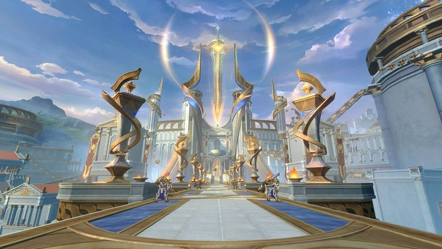
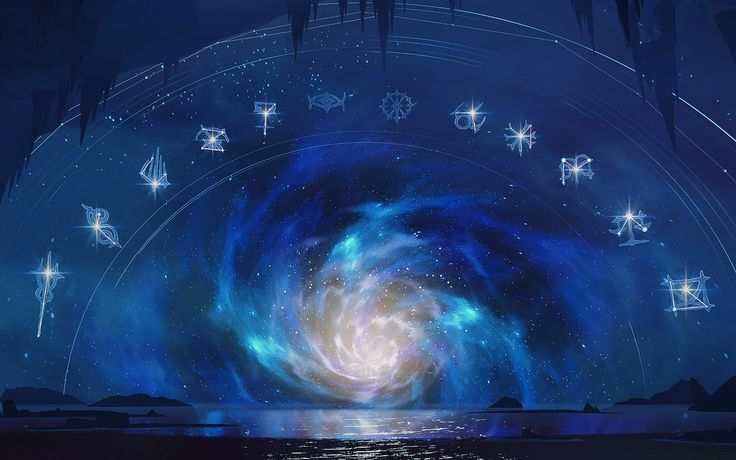
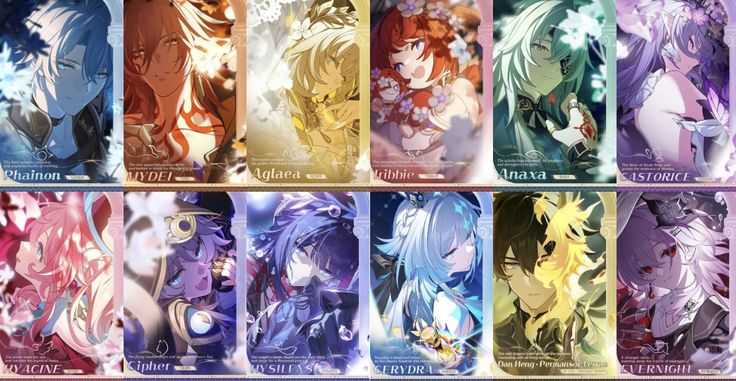

Amphoreus
Amphoreus , também conhecido como a Terra Eterna , é o quinto mundo acessível em Honkai: Star Rail . Ele pode ser acessado após completar o capítulo da Missão Desbravadora " Uma Nova Aventura no Oitavo Amanhecer" .
Era um mundo sandbox isolado criado pela Scepter δ-me13 sob a administração de Lygus , em um projeto conhecido como O Experimento Amphoreus . O mundo foi construído usando memória e dados, mas após os eventos do capítulo da Missão Trailblaze, Como o Amanhã Virou Ontem , a Scepter foi destruída e Amphoreus está emergindo da Zona da Memória .

.jpg)

Titãs
Os Titãs são um grupo de seres divinos nascidos de Chamas-Núcleo enviadas pelos deuses de Amphoreus . Cada Titã tem uma Chama-Núcleo associada, e quem vencer a Prova de uma Chama-Núcleo pode herdar a divindade do Titã e se tornar um semideus


Visão Geral
Os Titãs foram responsáveis pela criação do primeiro céu, terra, mortais e do Calendário da Luz .Neste ponto, todos os Titãs caíram, e os Herdeiros de Crysos estão profetizados para assumir as Chamas do Núcleo. No ciclo anterior de Anforeu, os Titãs eram heróis e semideuses anteriores
Na verdade, revela-se que os Titãs e os Herdeiros de Crisos são sinais elétricos criados a partir da base dos "doze fatores", construções conjugadas que espelham os Éons e os Andarilhos . Os doze fatores, uma variável central criada por Lygus e inserida no Experimento de Amphoreus , são modelos simplificados do Primum Mobile da vida. Ao fazer com que os Herdeiros de Crysos herdem as Chamas do Núcleo dos Titãs, os sinais elétricos iteram e melhoram por meio da rivalidade e da herança.


Titãs conhecidos
| Nome | Coreflame | Status | Herdeiro(s) associado(s) de Chrysos |
|---|---|---|---|
| Janus | Passagem | Falecido antes dos eventos do jogo (Coreflame retornou) | Tribios |
| Talanton | Lei | Falecido antes dos eventos do jogo (Coreflame retornou) | Cerydra |
| Oronyx | Tempo | Falecido desde a Missão Trailblaze Spindle, Trabalhando para Tecer a Tapeçaria do Tempo (Coreflame retornou) | Trailblazer, Cyrene, Evernight/March 7th |
| Georios | Terra | Falecido antes dos eventos do jogo (Coreflame retornou) | Dan Heng-Permansor Terrae |
| Àguia | Céu | Falecido desde a Missão Trailblaze Poet, Fale do Céu Através de Mim (II) | Jacíntia |
| Céfalo | Portador do mundo | Falecido antes dos eventos do jogo (Coreflame retornou) | Khaslana, Trailblazer |
| Cerces | Razão | Falecido como Estudioso da Missão Pioneira , Que nos encontremos novamente diante dos Portões da Verdade (Coréflame retornou) | Anaxágoras |
| Nikador | Conflito | Falecido durante a Missão Trailblaze Kremnos, Purifique Seu Sangue Enferrujado (II) (Coreflame retornou) | Mydeimos | Tânatos | Morte | Falecido como Estudioso da Missão Pioneira , Que nos encontremos novamente diante dos Portões da Verdade (Coréflame retornou) | Castorice |
| Zagreus | Engano | O corpo desaparece como "Ladrão Espiritual" Bartholos após devolver a Chama Central Portadora do Mundo a Phainon (Chama Central da Trapaça devolvida antes dos eventos do jogo) | Ciphera |
| Demiurgo | Gênese | Existente no passado. Voltou no tempo para fechar o ciclo causal e impedir o nascimento de Irontomb | Cyrene |